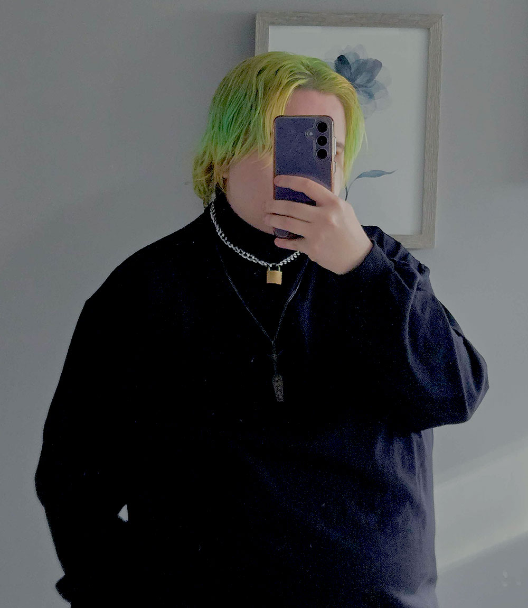

The prof running the LGBTQ+ support group said that I’ve made a ton of progress this year. Which, I hate to admit it, but my life has changed and I’ve actually started being happier. I’m less afraid of other people and their opinions of me. I’ve even been wearing the clothes that make me feel good about myself regularly at school.
Nothing has really changed since my last entry though. Still spending tons of time with Finn and Vega, my crush on Finn hasn’t gone anywhere, and I’m still totally screwed. I honestly don’t know how I’m going to be able to get through this next year without being absolutely distracted by him. At least the two of us don’t have any classes together. Don’t worry, I checked, we didn’t choose the same ones at all.
Oh, but some fun developments. People have started chatting with me during group, which is pretty cool. I thought it was weird at first, especially since they were complimenting me and everything, but I guess when you’re happier, people are less intimidated by you. Anyways! Jasmine and Emily invited me to this party being thrown by the GSA to kick off the school year and Finn is dragging me to it. So that’s where I’m going.
Funny story relating to Jasmine and Emily actually. They thought Finn and I were a couple. Seriously? Who would think that the two of us would be a couple? But anyways, since I’m single, they suggested that I should mingle and try and find a date? Which, I still don’t think is a good idea. No one would be interested in me anyways, so no point in trying.
Cedar